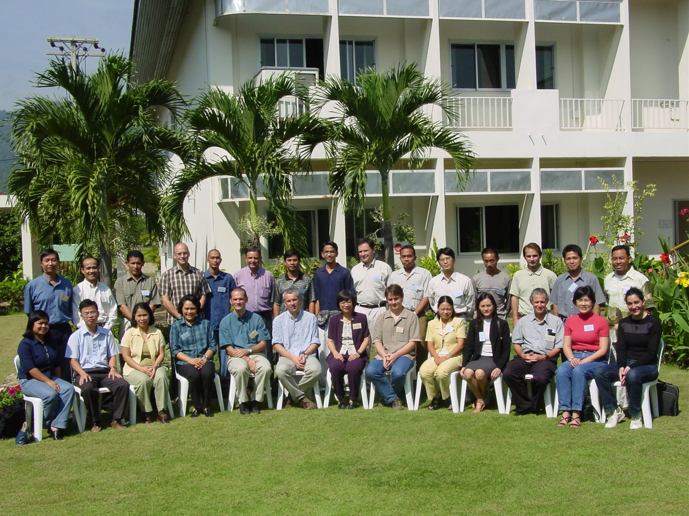

|
MAS and Integrated Watershed Management
21-25 October 2002
Multi-Agent Systems (MAS),
Social Sciences and
Integrated Natural Resource Management (INRM)
Trainer
Report on the training is available

Organizers
- Dr. Benchaphun S. Ekasingh ( University of Chiang Mai, Multiple
Cropping Center)
- F. Bousquet (CIRAD-IRRI)
Course Objectives
The objective is to share the lessons of European experiences on applications
of MAS to watershed management. A specific focus will be done to the methodology
of use of MAS within actual water management at basin scale. This course
will underline the synergy with other tools, such as role playing games,
while using MAS in collaborative decision making processes.
Training
- Integrated watershed management and MAS, a state of the art: limits
of more classic tools, gains with using MAS, various ways of implementing
MAS with a watershed management purpose.
- Presentation and analysis of a few case studies in Africa and/or Asia
- Presentation of the EC-funded FIRMA project: 5 applications of use
of MAS to assess water management patterns with the participation of
stakeholders.
- Generic components of MAS for integrated watershed management: what
is the range of implemented MAS from the area as well as the topics
to be dealt with point of view.
- MAS and collaborative decision making processes in the case of watershed
management: scale of the representation of the collaborative decision
making process, methodology of use of MAS and recourse to complementary
tools
- MAS and collaborative decision making for watershed management: examples
in Senegal and France.
Training schedule
As we have merged the training on MAS & GIS with the training on
Integrated Watershed Management, the schedule below is valid for the
two weeks.
| Day |
8h30-10h |
10h30-12h |
13h30-15h |
15h30-17h
|
| Monday 14 |
Registration, Opening ceremony, Introduction
of Participants
|
Introductory Conference
|
Shadoc role game
|
| Tuesday 15 |
Introduction to MAS
|
Practice on MAS
|
Introduction to GIS
|
Practice on GIS
|
| Wednesday 16 |
Introduction to GIS
|
Practice on GIS
|
Discussions with trainers, hands-on exercices
|
| Thursday 17 |
Spatialized MAS
|
Practice on UML
|
MAS GIS Watershed Management case study
|
Practice on MAS and GIS
|
| Friday 18 |
Int.Watershed Management
|
Practice on MAS
|
MAS-GIS Water management case study
|
Practice on MAS and GIS
|
|
|
| Monday 21 |
IWM tools
|
Exercices on case study
|
MAS
|
Mae Salaep Role Game
|
| Tuesday 22 |
MAS and decision making process
|
Exercices on case study
|
MAS
|
Exercices on case study
|
| Wednesday 23 |
IWM examples
|
Exercices on case study
|
Discussions with trainers, hands-on exercices
|
| Thursday 24 |
Firma project
|
Exercices on case study
|
Exercices on case study
|
| Friday 25 |
Participants presentations
|
Evaluation, Discussion & Closing Ceremony
|
|
|
|